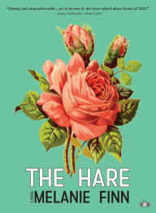

Monthly Pick Fiction Books

The Stranger in the Lifeboat
~ by Mitch Albom
What would happen if we called on God for help and God actually appeared? In Mitch Albom's profound new novel of hope and faith, a group of shipwrecked passengers pull a strange man from the sea. He claims to be "the Lord." And he says he can only save them if they all believe in him.

 5.0/5.0
5.0/5.0
The Hare
~ by Melanie Finn
The Hare is an affecting portrait of Rosie Monroe, of her resilience and personal transformation under the pin of the male gaze....
Every Last Fear
~ by Alex Finlay
In one of the year's most anticipated debut psychological thrillers, a family made infamous by a true crime documentary is found dead, leaving their surviving son to uncover the truth about their final days....View All ⇒
General Fiction Books

The Seven Husbands of Evelyn Hugo
~ by Taylor Jenkins Reid
Aging and reclusive Hollywood movie icon Evelyn Hugo is finally ready to tell the truth about her glamorous and scandalous life. But when she chooses unknown magazine reporter Monique Grant for the job, no one is more astounded than Monique herself. Why her? Why now?
The Paris Apartment
~ by Lucy Foley
Everyone's a neighbor. Everyone's a suspect. And everyone knows something they're not telling....
Love & Saffron: A Novel of Friendship, Food, and Love
~ by Kim Fay
A brief respite from our chaotic world, Love & Saffron is a gem of a novel, a reminder that food and friendship are the antidote to most any heartache, and that human connection will always be worth creating.View All ⇒
Horror Books
Dracul
~ by J.D. Barker
It is 1868, and a twenty-one-year-old Bram Stoker waits in a desolate tower to face an indescribable evil. Armed only with crucifixes, holy water, and a rifle, he prays to survive a single night, the longest of his life. Desperate to record what he has witnessed, Bram scribbles down the events that led him here....The Low, Low Woods
~ by Carmen Maria Machado
Shudder-to-Think, Pennsylvania, has been on fire for years. The woods are full of rabbits with human eyes, a deer woman who stalks hungry girls, and swaths of skinless men. And the people of Shudder-to-Think? Well, they're not doing so well either....
Dead Until Dark
~ by Charlaine Harris
Then along comes Bill Compton. He's tall, dark, handsome--and Sookie can't hear a word he's thinking. He's exactly the type of guy she's been waiting for all her life....View All ⇒
Manga

The Way of the Househusband, Vol. 1
~ by Kousuke Oono
It's a day in the life of your average househusband—if your average househusband is the legendary yakuza “the Immortal Dragon”!The Promised Neverland, Vol. 1
~ by Kaiu Shirai
Life at Grace Field House is good for Emma and her fellow orphans. While the daily studying and exams they have to take are tough, their loving caretaker provides them with delicious food and plenty of playtime. But perhaps not everything is as it seems....
Sword Art Online Progressive 1
~ by Reki Kawahara
Kirito and Asuna are two very different people, but they both desire to fight alone. Nonetheless, they find themselves drawn together to face challenges from both within and without. Given that the entire virtual world they now live in has been created as a deathtrap, the surviving players of Sword Art Online are starting to get desperate, and desperation makes them dangerous to loners like Kirito and Asuna....